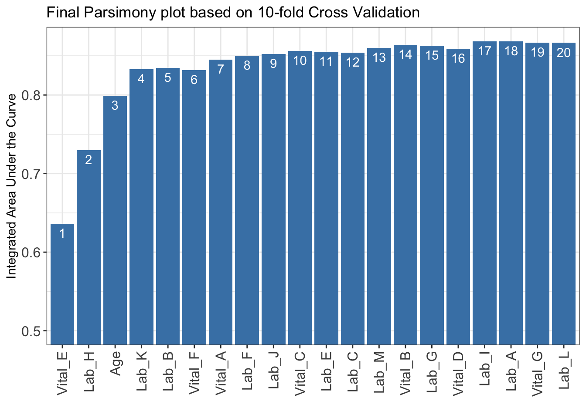
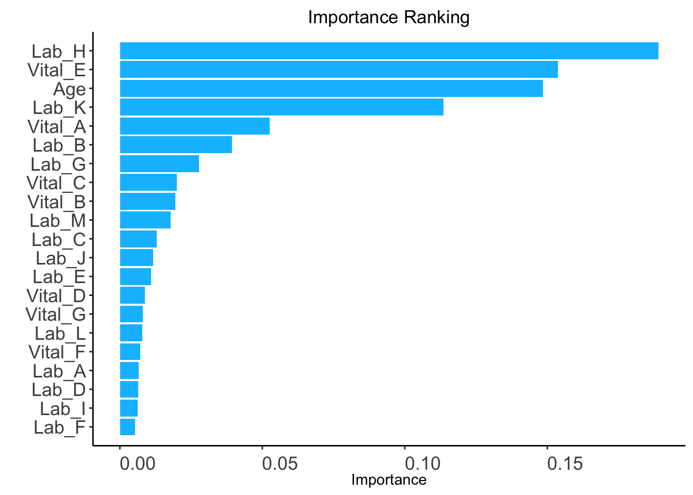
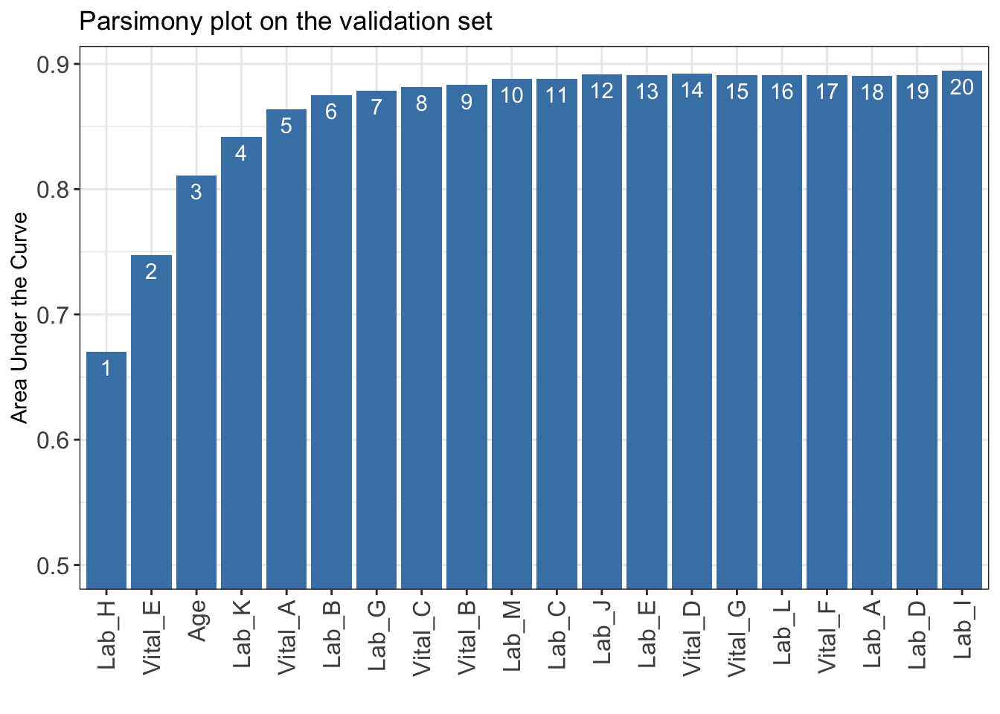

library(AutoScore)
data("sample_data_survival")
check_data_survival(sample_data_survival)Data type check passed. No NA in data. AutoScore-Survival refers to the AutoScore framework for developing point-based scoring models for survival outcomes. Similar to the implementation described in Chapter 4 for binary outcomes, AutoScore-Survival is implemented by five functions: AutoScore_rank_Survival(), AutoScore_parsimony_Survival(), AutoScore_weighting_Survival(), AutoScore_fine_tuning_Survival() and AutoScore_testing_Survival().
In this chapter, we demonstrate the use of AutoScore-Survival to develop sparse risk scores for a survival outcome, adjust parameters to improve interpretability, assess the performance of the final model and map the score to predict risks for new data. To facilitate clinical applications, in the following sections we demonstrate AutoScore application in 3 demos with large and small datasets and with missing information.
Citation for AutoScore-Survival:
In Demo 1, we demonstrate the use of AutoScore-Survival on a dataset with 20,000 observations using split-sample approach (i.e., to randomly divide the full dataset into training, validation and test sets) for model development.
Load package and data
library(AutoScore)
data("sample_data_survival")
check_data_survival(sample_data_survival)Data type check passed. No NA in data. Prepare training, validation, and test datasets
set.seed(4)
out_split <- split_data(data = sample_data_survival, ratio = c(0.7, 0.1, 0.2))
train_set <- out_split$train_set
validation_set <- out_split$validation_set
test_set <- out_split$test_setAutoScore-Survival Modules 1
ntree: Number of trees required only if when method is “rf” (Default: 100).ntree value. Code below uses ntree = 5 for demonstration.ranking <- AutoScore_rank_Survival(train_set = train_set, ntree = 5)
Trees Grown: 1, Time Remaining (sec): 0
Trees Grown: 5, Time Remaining (sec): 0
The ranking based on variable importance was shown below for each variable:
Vital_E Lab_H Age Lab_K Vital_A Lab_B
0.165608652 0.160762453 0.128912855 0.128557962 0.045219867 0.040417391
Lab_G Vital_C Lab_M Vital_B Lab_C Vital_D
0.024342208 0.022561527 0.020905397 0.018080011 0.016227841 0.014980410
Lab_J Lab_F Vital_F Lab_L Vital_G Lab_I
0.013780700 0.012120477 0.011200870 0.008297275 0.006354309 0.005682440
Lab_E Lab_D Lab_A
0.005093323 0.004567277 0.004141324 AutoScore-Survival Modules 2+3+4
n_min: Minimum number of selected variables (Default: 1).n_max: Maximum number of selected variables (Default: 20).categorize: Methods for categorizing continuous variables. Options include "quantile" or "kmeans" (Default: "quantile").quantiles: Predefined quantiles to convert continuous variables to categorical ones. (Default: c(0, 0.05, 0.2, 0.8, 0.95, 1)) Available if categorize = "quantile".max_cluster: The maximum number of cluster (Default: 5). Available if categorize = "kmeans".max_score: Maximum total score (Default: 100).auc_lim_min: Minimum y_axis limit in the parsimony plot (Default: 0.5).auc_lim_max: Maximum y_axis limit in the parsimony plot (Default: “adaptive”).iAUC <- AutoScore_parsimony_Survival(
train_set = train_set, validation_set = validation_set,
rank = ranking, max_score = 100, n_min = 1, n_max = 20,
categorize = "quantile", quantiles = c(0, 0.05, 0.2, 0.8, 0.95, 1),
auc_lim_min = 0.5, auc_lim_max = "adaptive"
)Select 1 Variable(s): 0.6651428
Select 2 Variable(s): 0.7474401
Select 3 Variable(s): 0.8111006
Select 4 Variable(s): 0.8416833
Select 5 Variable(s): 0.867012
Select 6 Variable(s): 0.8779297
Select 7 Variable(s): 0.8809597
Select 8 Variable(s): 0.8830361
Select 9 Variable(s): 0.8875346
Select 10 Variable(s): 0.8905936
Select 11 Variable(s): 0.8902906
Select 12 Variable(s): 0.8906035
Select 13 Variable(s): 0.8930109
Select 14 Variable(s): 0.8927079
Select 15 Variable(s): 0.8935644
Select 16 Variable(s): 0.8922507
Select 17 Variable(s): 0.8926088
Select 18 Variable(s): 0.89691
Select 19 Variable(s): 0.8981632
Select 20 Variable(s): 0.8983681 iAUC for further analysis or export it to CSV to other software for plotting.write.csv(data.frame(iAUC), file = "iAUC.csv")num_var) based on the parsimony plot obtained in STEP(ii).num_var variables in the ranked list ranking obtained in STEP(i).final_variables based on the clinical preferences and knowledge.# Example 1: Top 6 variables are selected
num_var <- 6
final_variables <- names(ranking[1:num_var])
# Example 2: Top 9 variables are selected
num_var <- 9
final_variables <- names(ranking[1:num_var])
# Example 3: Top 6 variables, the 9th and 10th variable are selected
num_var <- 6
final_variables <- names(ranking[c(1:num_var, 9, 10)])Re-run AutoScore-Survival Modules 2+3
cut_vec with current cutoffs of continuous variables, which can be fine-tuned in STEP(iv).time_point: The time points to be evaluated using time-dependent AUC(t).cut_vec <- AutoScore_weighting_Survival(
train_set = train_set, validation_set = validation_set,
final_variables = final_variables, max_score = 100,
categorize = "quantile", quantiles = c(0, 0.05, 0.2, 0.8, 0.95, 1),
time_point = c(1, 3, 7, 14, 30, 60, 90)
)****Included Variables:
variable_name
1 Vital_E
2 Lab_H
3 Age
4 Lab_K
5 Vital_A
6 Lab_B
****Initial Scores:
======== ========== =====
variable interval point
======== ========== =====
Vital_E <12 0
[12,15) 5
[15,22) 11
[22,25) 16
>=25 18
Lab_H <0.2 0
[0.2,1.1) 3
[1.1,3.1) 8
[3.1,4) 13
>=4 18
Age <35 0
[35,49) 5
[49,76) 13
[76,89) 21
>=89 24
Lab_K <8 0
[8,42) 5
[42,58) 11
>=58 13
Vital_A <60 0
[60,73) 3
[73,98) 8
[98,111) 11
>=111 13
Lab_B <8.5 0
[8.5,11.2) 3
[11.2,17) 8
[17,19.8) 11
>=19.8 13
======== ========== =====
Integrated AUC by all time points: 0.8779297
C_index: 0.785738
The AUC(t) are shown as bwlow:
time_point AUC_t
1 1 0.0002500
2 3 1.0000000
3 7 0.9927981
4 14 0.9872613
5 30 0.9433755
6 60 0.8735564
7 90 0.8599778
***The cutoffs of each variable generated by the AutoScore are saved in cut_vec. You can decide whether to revise or fine-tune them AutoScore-Survival Module 5 & Re-run AutoScore-Survival Modules 2+3
cut_vec with domain knowledge to update the scoring table (AutoScore-Survival Module 5).time_point: The time points to be evaluated using time-dependent AUC(t).## For example, we have current cutoffs of continuous variable: Age
## ============== =========== =====
## variable interval point
## ============== =========== =====
## Age <35 0
## [35,49) 5
## [49,76) 13
## [76,89) 21
## >=89 24 c(35, 49, 76, 89). We can fine tune the cutoffs as follows:# Example 1: rounding up to a nice number
cut_vec$Age <- c(35, 50, 75, 90)
# Example 2: changing cutoffs according to clinical knowledge or preference
cut_vec$Age <- c(25, 50, 75, 90)
# Example 3: combining categories
cut_vec$Age <- c(50, 75, 90)cut_vec$Lab_H <- c(0.2, 1, 3, 4)
cut_vec$Lab_K <- c(10, 40)
cut_vec$Lab_B <- c(10, 17)
cut_vec$Vital_A <- c(70, 98)
scoring_table <- AutoScore_fine_tuning_Survival(
train_set = train_set, validation_set = validation_set,
final_variables = final_variables, cut_vec = cut_vec, max_score = 100,
time_point = c(1, 3, 7, 14, 30, 60, 90)
)***Fine-tuned Scores:
======== ======== =====
variable interval point
======== ======== =====
Vital_E <12 0
[12,15) 4
[15,22) 11
[22,25) 19
>=25 22
Lab_H <0.2 0
[0.2,1) 4
[1,3) 11
[3,4) 15
>=4 22
Age <50 0
[50,75) 11
[75,90) 19
>=90 22
Lab_K <10 0
[10,40) 7
>=40 11
Vital_A <70 0
[70,98) 7
>=98 11
Lab_B <10 0
[10,17) 4
>=17 11
======== ======== =====
***Performance (based on validation set, after fine-tuning):
Integrated AUC by all time points: 0.8678829
C_index: 0.7772233
The AUC(t) are shown as bwlow:
time_point AUC_t
1 1 0.0002500
2 3 1.0000000
3 7 0.9853457
4 14 0.9867337
5 30 0.9366347
6 60 0.8606470
7 90 0.8585631AutoScore-Survival Module 6
threshold: Score threshold for the ROC analysis to generate sensitivity, specificity, etc. If set to "best", the optimal threshold will be calculated (Default: "best").with_label: Set to TRUE if there are labels in the test_set and performance will be evaluated accordingly (Default: TRUE).with_label to FALSE if there are not label in the test_set and the final predicted scores will be the output without performance evaluation.time_point: The time points to be evaluated using time-dependent AUC(t).pred_score <- AutoScore_testing_Survival(
test_set = test_set, final_variables = final_variables, cut_vec = cut_vec,
scoring_table = scoring_table, threshold = "best", with_label = TRUE,
time_point = c(1, 3, 7, 14, 30, 60, 90)
)***Performance using AutoScore (based on unseen test Set):
Integrated AUC by all time points: 0.873 (0.864-0.88)
C_index: 0.782 (0.773-0.789)
The AUC(t) are shown as bwlow:
time_point AUC_t
1 1 0.637 (0-0.997)
2 3 0.955 (0.91-0.996)
3 7 0.969 (0.939-0.992)
4 14 0.946 (0.921-0.974)
5 30 0.937 (0.923-0.949)
6 60 0.865 (0.854-0.875)
7 90 0.865 (0.85-0.877)head(pred_score) pred_score label_time label_status
1 19 91 FALSE
2 44 60 TRUE
3 70 43 TRUE
4 37 90 TRUE
5 51 62 TRUE
6 33 91 FALSEFurther analysis to map score to risk (e.g., conversion table, Kaplan Meier Curve, output the score).
plot_survival_km() to generate Kaplan-Meier curve under different score thresholds (decided by users, e.g., 50).plot_survival_km(pred_score = pred_score, score_cut = c(50))
plot_survival_km(pred_score, score_cut = c(40, 50, 60))
conversion_table_survival() to generate the performance under different score_cut score cut-offs.time_point: The time points to be evaluated using time-dependent AUC(t).table <- conversion_table_survival(
pred_score = pred_score, score_cut = c(40,50,60),
time_point = c(7, 14, 30, 60, 90)
)pred_score for further analysis or export it to CSV to other software (e.g., generating the calibration curve).write.csv(pred_score, file = "pred_score.csv")In Demo 2, we demonstrate the use of AutoScore-Survival on a smaller dataset where there are no sufficient samples to form a separate training and validation dataset. Thus, the cross validation is employed to generate the parsimony plot.
Load small dataset with 1000 samples
data("sample_data_survival_small")Prepare training and test datasets
train_set is equal to validation_set and the ratio of validation_set should be 0. Then cross-validation will be implemented in the STEP(ii) AutoScore_parsimony_Survival().set.seed(4)
out_split <- split_data(data = sample_data_survival_small, ratio = c(0.7, 0, 0.3),
cross_validation = TRUE)
train_set <- out_split$train_set
validation_set <- out_split$validation_set
test_set <- out_split$test_setAutoScore-Survival Modules 1
ntree: Number of trees required only if when method is “rf” (Default: 100).ntree value. Code below uses ntree = 5 for demonstration.ranking <- AutoScore_rank_Survival(train_set = train_set, ntree = 5)
Trees Grown: 1, Time Remaining (sec): 0
The ranking based on variable importance was shown below for each variable:
Vital_E Lab_H Age Lab_K Lab_B
1.056965e-01 9.211654e-02 9.174663e-02 6.298467e-02 6.046187e-02
Vital_F Vital_A Lab_F Lab_J Vital_C
4.304715e-02 3.741877e-02 2.783056e-02 2.610612e-02 1.774737e-02
Lab_E Lab_C Lab_M Vital_B Lab_G
1.674145e-02 1.518732e-02 1.430115e-02 1.422398e-02 9.859650e-03
Vital_D Lab_I Lab_A Vital_G Lab_L
7.664181e-03 4.044984e-03 2.562711e-03 0.000000e+00 -2.395057e-05
Lab_D
-7.823852e-04 
AutoScore-Survival Modules 2+3+4/p>
nmin: Minimum number of selected variables (Default: 1).nmax: Maximum number of selected variables (Default: 20).categorize: Methods for categorizing continuous variables. Options include "quantile" or "kmeans" (Default: "quantile").quantiles: Predefined quantiles to convert continuous variables to categorical ones. (Default: c(0, 0.05, 0.2, 0.8, 0.95, 1)) Available if categorize = "quantile".max_cluster: The maximum number of cluster (Default: 5). Available if categorize = "kmeans".max_score: Maximum total score (Default: 100).auc_lim_min: Minimum y_axis limit in the parsimony plot (Default: 0.5).auc_lim_max: Maximum y_axis limit in the parsimony plot (Default: “adaptive”).cross_validation: TRUE if cross-validation is needed, especially for small datasets.fold: The number of folds used in cross validation (Default: 10). Available if cross_validation = TRUE.do_trace: If set to TRUE, all results based on each fold of cross-validation would be printed out and plotted (Default: FALSE). Available if cross_validation = TRUE.iAUC <- AutoScore_parsimony_Survival(
train_set = train_set, validation_set = validation_set, rank = ranking,
max_score = 100, n_min = 1, n_max = 20,
categorize = "quantile", quantiles = c(0, 0.05, 0.2, 0.8, 0.95, 1),
auc_lim_min = 0.5, auc_lim_max = "adaptive",
cross_validation = TRUE, fold = 10, do_trace = FALSE
)***list of final mean AUC values through cross-validation are shown below
auc_set.sum
1 0.6360233
2 0.7296583
3 0.7991611
4 0.8326020
5 0.8344274
6 0.8318417
7 0.8449623
8 0.8499911
9 0.8522826
10 0.8560715
11 0.8547488
12 0.8537975
13 0.8601176
14 0.8637747
15 0.8626508
16 0.8588067
17 0.8681878
18 0.8682324
19 0.8665358
20 0.8663715
iAUC for further analysis or export it to CSV to other software for plotting.write.csv(data.frame(iAUC), file = "iAUC.csv")num_var) based on the parsimony plot obtained in STEP(ii).num_var variables in the ranked list ranking obtained in STEP(i).final_variables based on the clinical preferences and knowledge.# Example 1: Top 6 variables are selected
num_var <- 6
final_variables <- names(ranking[1:num_var])
# Example 2: Top 9 variables are selected
num_var <- 9
final_variables <- names(ranking[1:num_var])
# Example 3: Top 6 variables, the 9th and 10th variable are selected
num_var <- 6
final_variables <- names(ranking[c(1:num_var, 9, 10)])Re-run AutoScore-Survival Modules 2+3
cut_vec with current cutoffs of continuous variables, which can be fine-tuned in STEP(iv).time_point: The time points to be evaluated using time-dependent AUC(t).cut_vec <- AutoScore_weighting_Survival(
train_set = train_set, validation_set = validation_set,
final_variables = final_variables, max_score = 100,
categorize = "quantile", quantiles = c(0, 0.05, 0.2, 0.8, 0.95, 1),
time_point = c(1, 3, 7, 14, 30, 60, 90)
)****Included Variables:
variable_name
1 Vital_E
2 Lab_H
3 Age
4 Lab_K
5 Lab_B
6 Vital_F
****Initial Scores:
======== =========== =====
variable interval point
======== =========== =====
Vital_E <12 0
[12,15) 5
[15,22) 15
[22,25) 21
>=25 22
Lab_H <0.1 0
[0.1,1.2) 4
[1.2,3.1) 11
[3.1,4.1) 20
>=4.1 24
Age <37 0
[37,49) 2
[49,76) 8
[76,89) 16
>=89 22
Lab_K <8 0
[8,42) 7
[42,59) 12
>=59 14
Lab_B <9 0
[9,11.5) 3
[11.5,16.9) 4
[16.9,19.8) 10
>=19.8 14
Vital_F <35.9 3
[35.9,36.3) 2
[36.3,37.3) 2
[37.3,37.7) 0
>=37.7 0
======== =========== =====
Integrated AUC by all time points: 0.8551594
C_index: 0.7644388
The AUC(t) are shown as bwlow:
time_point AUC_t
1 1 0.9971388
2 3 0.9770774
3 7 0.9770774
4 14 0.9856115
5 30 0.9005364
6 60 0.8520291
7 90 0.8462442
***The cutoffs of each variable generated by the AutoScore are saved in cut_vec. You can decide whether to revise or fine-tune them AutoScore-Survival Module 5 & Re-run AutoScore-Survival Modules 2+3
cut_vec with domain knowledge to update the scoring table (AutoScore-Survival Module 5).time_point: The time points to be evaluated using time-dependent AUC(t).## For example, we have current cutoffs of continuous variable: Age
## ============== =========== =====
## variable interval point
## ============== =========== =====
## Age <35 0
## [35,49) 2
## [49,76) 8
## [76,89) 16
## >=89 22 c(35, 49, 76, 89). We can fine tune the cutoffs as follows:# Example 1: rounding up to a nice number
cut_vec$Age <- c(35, 50, 75, 90)
# Example 2: changing cutoffs according to clinical knowledge or preference
cut_vec$Age <- c(25, 50, 75, 90)
# Example 3: combining categories
cut_vec$Age <- c(50, 75, 90)cut_vec$Lab_H <- c(0.2, 1, 3, 4)
cut_vec$Lab_K <- c(10, 40)
cut_vec$Lab_B <- c(10, 17)
cut_vec$Vital_A <- c(70, 98)
scoring_table <- AutoScore_fine_tuning_Survival(
train_set = train_set, validation_set = validation_set,
final_variables = final_variables, cut_vec = cut_vec, max_score = 100,
time_point = c(1, 3, 7, 14, 30, 60, 90)
)***Fine-tuned Scores:
======== =========== =====
variable interval point
======== =========== =====
Vital_E <12 0
[12,15) 3
[15,22) 15
[22,25) 21
>=25 23
Lab_H <0.2 0
[0.2,1) 3
[1,3) 11
[3,4) 20
>=4 26
Age <50 0
[50,75) 9
[75,90) 15
>=90 23
Lab_K <10 0
[10,40) 9
>=40 15
Lab_B <10 0
[10,17) 3
>=17 9
Vital_F <35.9 4
[35.9,36.3) 1
[36.3,37.3) 2
[37.3,37.7) 0
>=37.7 0
======== =========== =====
***Performance (based on validation set, after fine-tuning):
Integrated AUC by all time points: 0.8535286
C_index: 0.7634054
The AUC(t) are shown as bwlow:
time_point AUC_t
1 1 1.0000000
2 3 0.9674069
3 7 0.9674069
4 14 0.9772662
5 30 0.8922335
6 60 0.8466340
7 90 0.8518403AutoScore-Survival Module 6
threshold: Score threshold for the ROC analysis to generate sensitivity, specificity, etc. If set to "best", the optimal threshold will be calculated (Default: "best").with_label: Set to TRUE if there are labels in the test_set and performance will be evaluated accordingly (Default: TRUE).with_label to FALSE if there are not label in the test_set and the final predicted scores will be the output without performance evaluation.time_point: The time points to be evaluated using time-dependent AUC(t).pred_score <- AutoScore_testing_Survival(
test_set = test_set, final_variables = final_variables, cut_vec = cut_vec,
scoring_table = scoring_table, threshold = "best", with_label = TRUE,
time_point = c(1, 3, 7, 14, 30, 60, 90)
)***Performance using AutoScore (based on unseen test Set):
Integrated AUC by all time points: 0.872 (0.848-0.898)
C_index: 0.78 (0.751-0.805)
The AUC(t) are shown as bwlow:
time_point AUC_t
1 1 0.003 (0.002-0.007)
2 3 0.003 (0.002-0.007)
3 7 0.651 (0.002-1)
4 14 0.864 (0.002-1)
5 30 0.944 (0.901-0.981)
6 60 0.856 (0.814-0.902)
7 90 0.852 (0.801-0.892)head(pred_score) pred_score label_time label_status
1 67 52 TRUE
2 26 91 FALSE
3 49 75 TRUE
4 70 59 TRUE
5 30 91 FALSE
6 47 91 FALSEconversion_table_survival(), and Kaplan-Meier curve using plot_survival_km(). Please refer to our demo for large sample for detail.In Demo #3, we demonstrate the use of AutoScore on a dataset with missing values in two variables (i.e., Vital_A, Vital_B).
check_data_survival(sample_data_survival_missing)Data type check passed.
WARNING: NA detected in data: ----- Variable name No. missing %missing
Vital_A Vital_A 4000 20
Vital_B Vital_B 12000 60SUGGESTED ACTION:
* Consider imputation and supply AutoScore with complete data. * Alternatively, AutoScore can handle missing values as a separate 'Unknown' category, IF:
- you believe the missingness in your dataset is informative, AND
- missing is prevalent enough that you prefer to preserve them as NA rather than removing or doing imputation, AND
- missing is not too prevalent, which may make results unstable.AutoScore can automatically treat the missingness as a new category named Unknown. The following steps are the same as those in Demo 1.
set.seed(4)
out_split <- split_data(data = sample_data_survival, ratio = c(0.7, 0.1, 0.2))
train_set <- out_split$train_set
validation_set <- out_split$validation_set
test_set <- out_split$test_set
ranking <- AutoScore_rank_Survival(train_set = train_set, ntree = 5)
Trees Grown: 1, Time Remaining (sec): 0
Trees Grown: 5, Time Remaining (sec): 0
The ranking based on variable importance was shown below for each variable:
Vital_E Lab_H Age Lab_K Vital_A Lab_B
0.165608652 0.160762453 0.128912855 0.128557962 0.045219867 0.040417391
Lab_G Vital_C Lab_M Vital_B Lab_C Vital_D
0.024342208 0.022561527 0.020905397 0.018080011 0.016227841 0.014980410
Lab_J Lab_F Vital_F Lab_L Vital_G Lab_I
0.013780700 0.012120477 0.011200870 0.008297275 0.006354309 0.005682440
Lab_E Lab_D Lab_A
0.005093323 0.004567277 0.004141324 
iAUC <- AutoScore_parsimony_Survival(
train_set = train_set, validation_set = validation_set,
rank = ranking, max_score = 100, n_min = 1, n_max = 20,
categorize = "quantile", quantiles = c(0, 0.05, 0.2, 0.8, 0.95, 1),
auc_lim_min = 0.5, auc_lim_max = "adaptive"
)Select 1 Variable(s): 0.6651428
Select 2 Variable(s): 0.7474401
Select 3 Variable(s): 0.8111006
Select 4 Variable(s): 0.8416833
Select 5 Variable(s): 0.867012
Select 6 Variable(s): 0.8779297
Select 7 Variable(s): 0.8809597
Select 8 Variable(s): 0.8830361
Select 9 Variable(s): 0.8875346
Select 10 Variable(s): 0.8905936
Select 11 Variable(s): 0.8902906
Select 12 Variable(s): 0.8906035
Select 13 Variable(s): 0.8930109
Select 14 Variable(s): 0.8927079
Select 15 Variable(s): 0.8935644
Select 16 Variable(s): 0.8922507
Select 17 Variable(s): 0.8926088
Select 18 Variable(s): 0.89691
Select 19 Variable(s): 0.8981632
Select 20 Variable(s): 0.8983681 
Unknown category indicating the missingness will be displayed in the final scoring table.num_var <- 6
final_variables <- names(ranking[1:num_var])
cut_vec <- AutoScore_weighting_Survival(
train_set = train_set, validation_set = validation_set,
final_variables = final_variables, max_score = 100,
categorize = "quantile", quantiles = c(0, 0.05, 0.2, 0.8, 0.95, 1)
)****Included Variables:
variable_name
1 Vital_E
2 Lab_H
3 Age
4 Lab_K
5 Vital_A
6 Lab_B
****Initial Scores:
======== ========== =====
variable interval point
======== ========== =====
Vital_E <12 0
[12,15) 5
[15,22) 11
[22,25) 16
>=25 18
Lab_H <0.2 0
[0.2,1.1) 3
[1.1,3.1) 8
[3.1,4) 13
>=4 18
Age <35 0
[35,49) 5
[49,76) 13
[76,89) 21
>=89 24
Lab_K <8 0
[8,42) 5
[42,58) 11
>=58 13
Vital_A <60 0
[60,73) 3
[73,98) 8
[98,111) 11
>=111 13
Lab_B <8.5 0
[8.5,11.2) 3
[11.2,17) 8
[17,19.8) 11
>=19.8 13
======== ========== =====
Integrated AUC by all time points: 0.8779297
C_index: 0.785738
The AUC(t) are shown as bwlow:
time_point AUC_t
1 1 0.0002500
2 3 1.0000000
3 7 0.9927981
4 14 0.9872613
5 30 0.9433755
6 60 0.8735564
7 90 0.8599778
***The cutoffs of each variable generated by the AutoScore are saved in cut_vec. You can decide whether to revise or fine-tune them